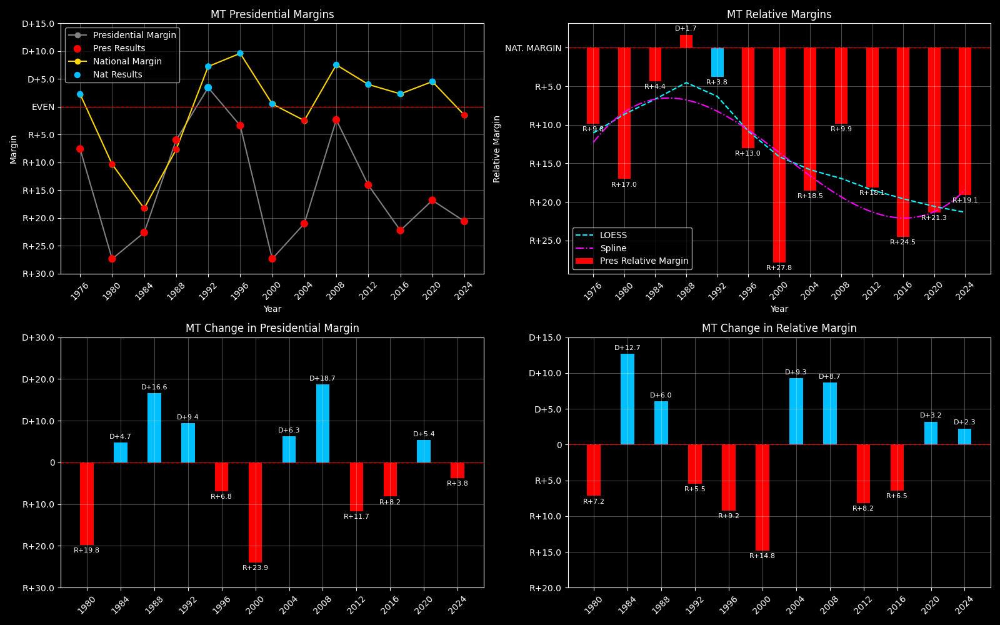

← Back to Map

Montana (MT) statewide
Montana (MT) — Data
| Year | D | R | Margin | Rel. Margin | Nat. Margin | Margin Δ | Rel. Margin Δ | Nat. Margin Δ |
|---|
| 1976 | 149,259(46.2%) | 173,703(53.8%) | R+7.6 | R+9.8 | D+2.3 | | | |
| 1980 | 118,032(36.3%) | 206,814(63.7%) | R+27.3 | R+17.0 | R+10.3 | R+19.8 | R+7.2 | R+12.6 |
| 1984 | 146,742(38.7%) | 232,450(61.3%) | R+22.6 | R+4.4 | R+18.2 | D+4.7 | D+12.7 | R+7.9 |
| 1988 | 168,936(47.0%) | 190,412(53.0%) | R+6.0 | D+1.7 | R+7.7 | D+16.6 | D+6.0 | D+10.6 |
| 1992 | 154,507(51.7%) | 144,207(48.3%) | D+3.4 | R+3.8 | D+7.2 | D+9.4 | R+5.5 | D+14.9 |
| 1996 | 167,922(48.3%) | 179,652(51.7%) | R+3.4 | R+13.0 | D+9.6 | R+6.8 | R+9.2 | D+2.4 |
| 2000 | 137,126(36.3%) | 240,178(63.7%) | R+27.3 | R+27.8 | D+0.5 | R+23.9 | R+14.8 | R+9.1 |
| 2004 | 173,710(39.5%) | 266,063(60.5%) | R+21.0 | R+18.5 | R+2.5 | D+6.3 | D+9.3 | R+3.0 |
| 2008 | 231,667(48.8%) | 242,763(51.2%) | R+2.3 | R+9.9 | D+7.5 | D+18.7 | D+8.7 | D+10.0 |
| 2012 | 201,839(43.0%) | 267,928(57.0%) | R+14.1 | R+18.1 | D+4.0 | R+11.7 | R+8.2 | R+3.5 |
| 2016 | 177,709(38.9%) | 279,240(61.1%) | R+22.2 | R+24.5 | D+2.3 | R+8.2 | R+6.5 | R+1.7 |
| 2020 | 244,786(41.6%) | 343,602(58.4%) | R+16.8 | R+21.3 | D+4.5 | D+5.4 | D+3.2 | D+2.2 |
| 2024 | 231,906(39.7%) | 352,079(60.3%) | R+20.6 | R+19.1 | R+1.5 | R+3.8 | D+2.3 | R+6.0 |
Column explanations
- Year
- Election year.
- D
- Number of votes for the Democratic candidate (raw count).
- R
- Number of votes for the Republican candidate (raw count).
- Margin
- Margin between the two major-party candidates ((D - R)/(D + R)).
- Rel. Margin
- The presidential margin relative to the national presidential margin (Margin - Nat. Margin).
- Nat. Margin
- The national presidential margin for that year ((D_total - R_total)/(D_total + R_total)).
- Δ
- Change (delta) in the value from the previous election year. Blank if no data for previous year.